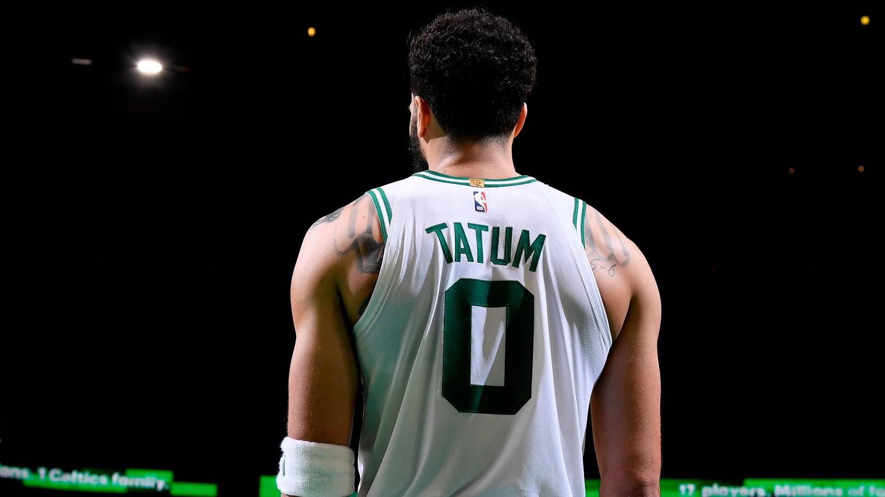
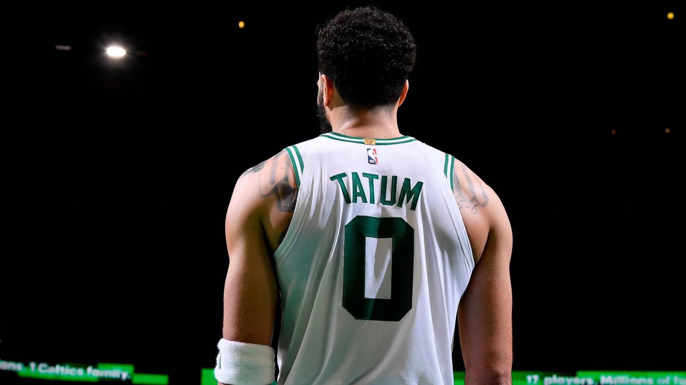

Here is a brief history of the Boston Celtics
The Boston Celtics are an American professional basketball team based in Boston. The Celtics compete in the National Basketball Association (NBA) as a member of the league's Eastern Conference Atlantic Division. Founded in 1946 as one of the league's original eight teams, the Celtics play their home games at TD Garden also known as the Boston Gardens. The Celtics are regarded as one of the most successful basketball teams in NBA history; the franchise is tied with the Los Angeles Lakers for most NBA Championships won with 17 and currently holds the record for the most recorded wins of any NBA team. It has 36 alumni in the Basketball Hall of Fame. The Boston Celtics is one of only 2 franchises to have remained in the same city they were found in never relocating that were part of the orignal 8 teams, the other team is the New York Knicks. The Boston Celtics won 11 championships in 13 years the team was led by All-time talent Bill Russell with a supporting cast of former MVP Bob Cousy, Joh Havlicek and Sam Jones. They were coached by Red Auerbach who then became GM of the franchise and then lastly the Owner. Red was in someway shape or form Associated with 16 of the 17 titles the franchise has won. The celtics won 3 championships in the 80's with Bird, McHale and Parish having iconic finals against the LA Lakers. The Celtics last championship was in 2008 where the aging big 3 of Kevin Garnett, Paul Pierce and Ray Allen beat the lakers in 7. Currently The Boston Team is contending for a NBA Championships.

 



M Bilal Khan © 2022
.png)